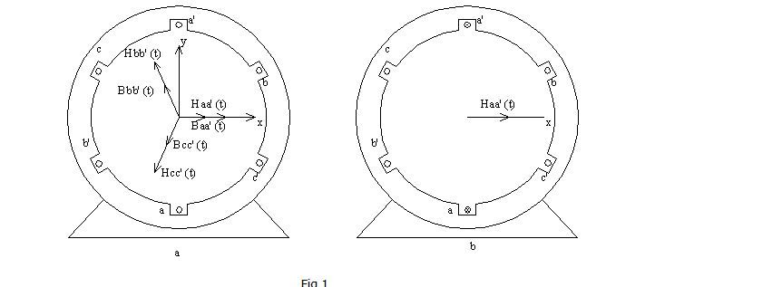
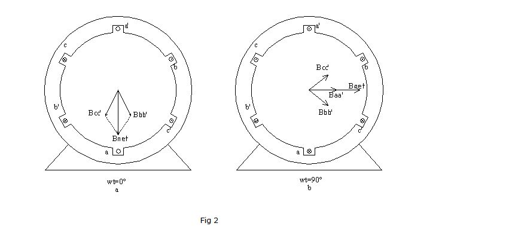
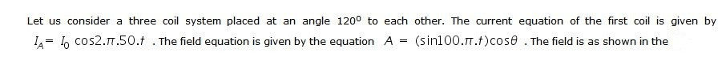
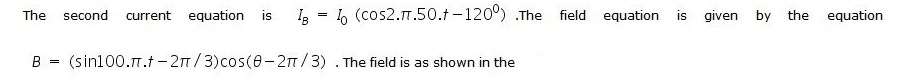
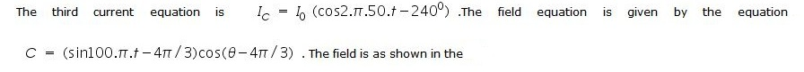

Shakshat Virtual Lab 
INDIAN INSTITUTE OF TECHNOLOGY GUWAHATI
Rotating Magnetic Field Behaviour in three coils


If two magnetic fields are present in a machine, then a torque will be created which will tend to line up the two magnetic fields. If one magnetic field is produced by the stator of an ac machine and the other one is produced by the rotor of the machine, then a torque will be induced in the rotor which will cause the rotor to turn and align itself with the stator magnetic field. If there were some way to make the stator magnetic field rotate, then the induced torque in the rotor would cause it to constantly "chase" the stator magnetic field around in a circle. This, in a nutshell, is the basic principle of all ac motor operation.
The fundamental principle of ac machine operation is that if a three-phase set of currents, each of equal magnitude and differing in phase by 120°, flows in a three-phase winding, then it will produce a rotating magnetic field of constant magnitude. The three phase winding consists of three separate windings spaced 120 electrical degrees apart around the surface of the machine. The rotating magnetic field concept is illustrated in the simplest case by an empty stator containing just three coils, each 120 degree apart (fig 1a). Since such a winding produces only one north and one south magnetic pole, it is a two pole winding.
To understand the concept of the rotating magnetic field, we will apply a set of currents to the stator of fig. 1 and see what happens at specific instants of time. Assume that the currents in the three coils are given by the equations
iaa' (t) = IM sin wt A
ibb' (t) = IM sin (wt - 120°) A
icc' (t) = IM sin (wt - 240°) A
The current in coil aa' flows into the a end of the coil and out the a' end of the coil. It produces the magnetic field intensity.
Haa' (t) = HM sin wt A<0° A.turns/m.
where 0° is the spatial angle of the magnetic field intensity vector. The direction of the magnetic field intensity vector Haa’(t) is given by the right-hand rule: If the fingers of the right hand curl in the direction of the current flow in the coil, then the resulting magnetic field is in the direction that the thumb points. Notice that the magnitude of the magnetic field intensity vector Haa’(t) varies sinusoidally in time, but the direction of Haa’(t) is always constant. Similarly, the magnetic field intensity vectors Hbb’(t) and Hcc’(t) are

(a) A simple three-phase stator. Currents in this stator are assumed positive if they flow into the unprimed end and out the primed end of the coils. The magnetizing intensities produced by each coil are also shown. (b) The magnetizing intensity vector Haa'(t) produced by a current flowing in coil aa'.
Hbb' (t) = HM sin (wt -120°)<120° A.turns/m.
Hcc' (t) = HM sin (wt -240°)<240° A.turns/m.
The flux densities resulting from these magnetic field intensities are given by
B=µH
They are
Baa' (t) = BM sin wt <0° T
Bbb' (t) = BM sin (wt - 120°) <120° T
Bcc' (t) = BM sin (wt - 240°) <240° T
Where BM=µHM. The currents and their corresponding flux densities can be examined at specific times to determine the resulting net magnetic field in the stator.For example, at time wt = 0°, the magnetic field from coil aa’ will be
Baa'=0.
The magnetic field from coil bb' will be
Bbb' = BM sin ( - 120°) <120°
and the magnetic field from coil cc' will be
Bcc' = BM sin (- 240°) <240°

(a) The vector magnetic field in a stator at time wt = 0°. (b) The vector magnetic field in a stator at time wt = 90°.
The total magnetic field from all three coils added together will be
Bnet = Baa' + Bbb’ + B cc'
= 0 + (-√3/2BM)< 120° + (√3/2BM) <240°
= 1.5 BM <-90°
The resulting net magnetic field is shown in the figure 2a. As another example, look at the magnetic field at time wt = 90°. At that time, the currents are
iaa' = IM sin 90° A
ibb’= IM sin (- 30°) A
icc’= IM sin (-150°) A
and the magnetic fields are
Baa’= BM <0°
Bbb’ = -0.5 BM < 120°
Bcc' = -0.5 BM <240°
The resulting net magnetic field is
Bnet = Baa' + Bbb’ + Bcc’
= BM < 0° + (-0.5BM) < 120° + (-0 .5BM) L<240°
= 1.5 BM <0°
The resulting magnetic field is shown in the Figure 2b. Notice that although the direction of the magnetic field has changed, the magnitude is constant. The magnetic field is maintaining a constant magnitude while rotating in a counterclockwise direction.
link
{kind=link}
link
{kind=link}
link
{kind=link}
The result will be a rotating field as shown in the link. Comparision between the original and relulting waves can be shown as such.
{kind=link}
{kind=link}